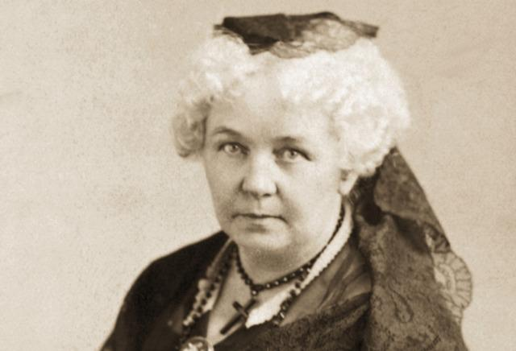
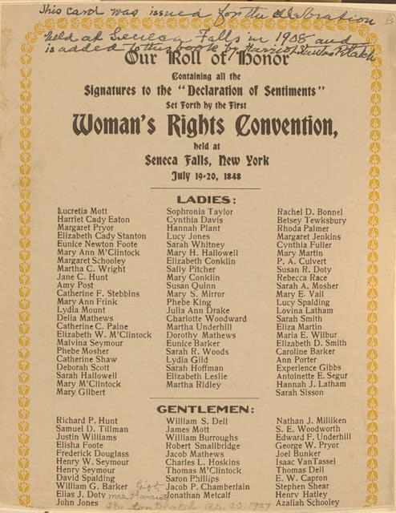
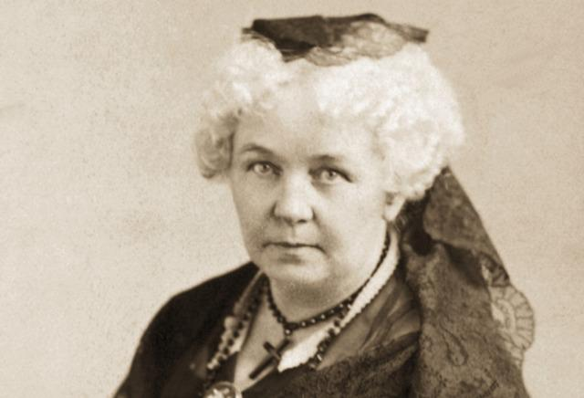
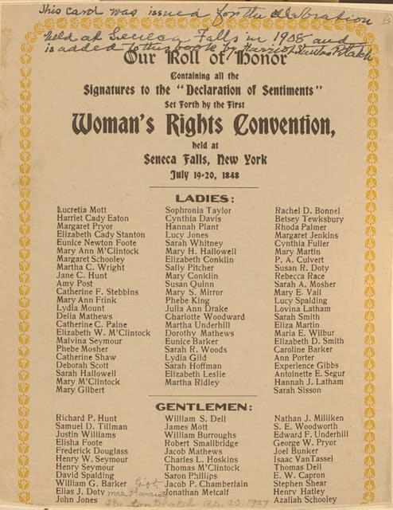

Born on May 3rd, 1898 in Charleston, South Carolina, Septima Clark grew up as the second oldest of eight children. Her father, a former slave, and her mother strongly believed in education and pushed Septima to attend school and pursue a college education. After attending public schools for African American children, Clark attended the Avery Normal Institute, a private college for colored individuals, where she obtained degree that would allow her to become an educator. Upon graduation, Septima faced racial challenges when applying to become an instructor in Charleston, South Carolina public schools as policies in place at the time forbid African American educators in the city’s public educational centers. Determined to teach, Mrs. Clark accepted a job at a public school in Johns Island, South Carolina after graduating from college. Her time at the John Island school would not only be the start of her impressive teaching career, but the beginning of her work with the NAACP.
In 1919 Septima returned to teach at her alma mater. With the help of the NAACP, Clark continued to teach while campaigning and collecting signatures to petition the city of Charleston, South Carolina to allow African American instructors to educate students in white and mixed public schools. She was successful in her petition to the city and further worked to acquire equal pay among the races for educators. To assist in her challenges, Thurgood Marshal fought alongside Clark in a 1945 court case that would elicit equal pay for educators regardless of race. After winning this case, Septima’s salary was increased by three times the amount she had previously been receiving. Clark recalled the case as the ‘first effort in a social action challenging the status quo”.
Clark returned to Charleston In 1947 to continue her teaching career, though this was unfortunately cut short nine years later when the state of South Carolina imposed a law in 1956 which prohibited educators to be involved with civil rights groups. Septima refused to leave the NAACP and as a result, was fired from her teaching position. While hindering her progress, Clark quickly regained her footing, moved to Tennessee, and was hired to teach at the Highlander Folk School, where they supported integration and civil rights. It was during this employment where Clark utilized school breaks to begin workshops to further her nonviolent civil rights causes, drawing in many individuals including Rosa Parks. Also during her time at the Highland Folk School, Septima began directing the Highlanders Citizenship School Program, which strived to teach people basic literary and mathematic skills to increase the number of African American eligible to vote during the time literacy laws that existed in America until 1960. In 1961, the Southern Christian Leadership Conference took over the project and made Mrs. Clark the Director of Education and Teaching. Under her direction, the Southern Christian Leadership Conference opened over 800 citizenship schools until her retirement in 1970. Nine years after her retirement, President Jimmy Carter presented her with the Living Legacy Award, shortly before the state of South Carolina awarder her the Order of the Palmetto; the highest civilian honor.

Seneca Falls Convention
Held in Seneca Falls, New York from July 19th to July 20th, 1848, the Seneca Falls Convention, Lead by Elizabeth Cady Stanton and Lucretia Mott, was a convention aimed to acquire basic civil rights for American women. Known for her historical feminist work, Stanton presented to the attendees of the convention, the Declaration of Sentiments. Modeled after the United States Declaration of Independence, the Declaration of Sentiments provided a list of grievances and demands women voiced. The Declaration of Sentiments was aimed to draw a connection to the list of grievances and demands sent to the King of England in the mid to late 1770’s. During the convention, the attendees passed eleven out of twelve resolutions unanimously. The ninth resolution, regarding women’s suffrage, hit a snag resulting in Stanton’s insisting on its passage. Although it faced ridicule and almost failed to pass, the resolution became the basis for the 19th amendment of the United States Constitution in 1920.
 


